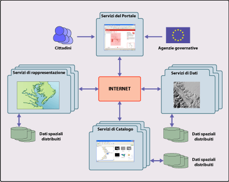
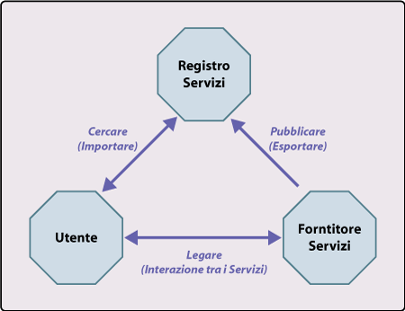

Un Geoportale è un portale dedicato alla consultazione di cataloghi online di risorse geospaziali. Si tratta di un sito web che consente l’accesso a risorse distribuite presso un gran numero di fornitori a partire da un punto di ingresso unico. Da questo punto di vista i geoportali sono assimilabili a grandi indici di dati associati agli strumenti necessari alla loro ricerca e consultazione. Poiché il portale rappresenta un indice più che un contenitore, i documenti distribuiti in rete non devono necessariamente risiedere su di esso. Piuttosto esso agisce da mediatore tra gli utenti ed i fornitori di risorse, abilitando una serie di funzionalità che consentono la transazione di dati.
In questo post vi proponiamo una presentazione delle principali caratteristiche architetturali di questa particolare specie di sito web.
Architettura dei Geoportali
Un Geoportale è un sito web dedicato alla consultazione di cataloghi online di risorse geospaziali (dati e servizi).
Il primo passo nella costruzione di un geoportale è la definizione dei requisiti dell’architettura che sarà adottata nella sua realizzazione. La funzione dell’architettura è definire scopi, obiettivi e caratteristiche di un portale ed identificarne le componenti funzionali. Uno degli standard architetturali interoperabili di riferimento è rappresentato dalla Geospatial Portal Reference Architecture (GPRA), un nucleo di accordi sull’interoperabilità proposte dall’OpenGIS Consortium che fornisce le istruzioni destinate a colmare le distanze tra differenti organizzazioni ed a semplificare lo scambio di informazioni spaziali. La GPRA fornisce le basi per la realizzazione di portali aperti e “tecnologicamente neutri” ed è stata sviluppata in modo da essere compatibile con altri modelli di riferimento ad alta complessità architetturale. Uno schema della GPRA è illustrato in Figura 1.

Figura 1 – Schema concettuale della GPRA applicato ad un esempio di geoportale. Cittadini ed istituzioni accedono ai dati attraverso gli strumenti messi a disposizione dal sistema e pubblicati in un portale web. L’accesso è garantito da una serie di servizi, messi a disposizione dal portale dai fornitori di dati, che consentono la ricerca, la rappresentazione, l’elaborazione ed il download delle informazioni di interesse per l’utente. Il portale non contiene necessariamente informazioni ma agisce da mediatore tra utenti e fornitori.
Questa architettura di riferimento si basa su 4 classi di servizi che esplicano le funzioni essenziali di un portale geospaziale. Le 4 classi di servizi sono:
- Servizi del portale – forniscono un punto di accesso unico all’informazione geospaziale in un portale; includono la gestione e la amministrazione del portale;
- Catalogo – usato per individuare servizi ed informazioni geospaziali e restituire i risultati di ricerche agli utenti;
- Servizi di rappresentazione – usati per elaborare le informazioni geospaziali e preparale per la presentazione all’utente;
- Servizi di dati – forniscono contenuti geospaziali e elaborazione dei dati.
I Servizi del Portale sono gli unici a dover risiedere sulla piattaforma HW/SW su cui risiede il portale. Tutti gli altri servizi possono essere distribuiti su internet e possono essere eseguiti e registrati dinamicamente. Si noti che il portale non è il luogo di archiviazione dei dati geospaziali elaborati dai servizi distribuiti.
La GPRA è un esempio di architettura software orientata ai servizi. Le caratteristiche di questo tipo di architetture sono descritte di seguito.
Le architetture orientate ai servizi (Service Oriented Architecture – SOA)
Un architettura orientata ai servizi consente di rendere disponibili in rete differenti risorse IT (software e dati) richiamabili come servizi a richiesta.
Con la locuzione inglese di Service Oriented Architecture si indica un’architettura software che soddisfa le richieste degli utenti usando servizi e consentendo l’utilizzo delle singole applicazioni come componenti di un processo. Le architetture di tipo SOA semplificano la modifica delle modalità di interazione tra i servizi o della combinazione nella quale i servizi vengono utilizzati nel processo. Esse inoltre agevolano l’aggiunta di nuovi servizi o la modifica di processi in risposta a specifiche esigenze.
E’ importante ricordare come in tale tipo di architettura i processi non sono più vincolati ad una specifica piattaforma o ad un’applicazione ma possono essere intesi come componenti di un processo più ampio, e quindi riutilizzati o modificati.
Nel caso particolare di un geoportale, il tipo di servizio distribuito dalla SOA è rappresentato da servizi web che forniscono interfacce standard per l’erogazione di funzionalità software.
Le applicazioni basate su SOA forniscono le stesse funzionalità che è possibile trovare in architetture monolitiche con l’aggiunta dei seguenti vantaggi:
- semplicità nell’aggiornamento della logica di processo;
- semplicità di modifica senza necessità di riconfigurare l’architettura complessiva.
La logica SOA si adatta alla realizzazione di portali concepiti come punti unici di distribuzione di dati e servizi web forniti da differenti organizzazioni. In questa visione i portali possono non immagazzinare alcun contenuto. Dati e servizi rimangono sotto la responsabilità ed il controllo delle organizzazioni competenti che ne garantiscono affidabilità e manutenzione. Il portale diventa quindi una sorta di distributore di contenuti e servizi che possono essere tra loro estremamente diversificati.
Come già accennato particolare rilievo assume l’architettura di riferimento proposta dall’OGC. Si tratta di un’architettura orientata ai servizi che ha il suo nucleo nei percorsi di pubblicazione e ricerca e che supporta la raccolta dinamica di documenti distribuiti da differenti servizi e fornitori.
La negoziazione dei servizi: il paradigma Publish – Find – Bind
Il metodo centrale di comunicazione interno di un portale basato su architetture orientate ai servizi segue il paradigma della negoziazione dei servizi. La negoziazione dei servizi è un concetto fondamentale che regola la ricerca delle istanze di servizio disponibili e si compone di tre elementi fondamentali:
- Esportazione – l’offerta di un servizio;
- Importazione – la ricerca di un servizio tra quelli offerti;
- Interazione – il collegamento di un client o di un utenza ad un servizio.
Questi tre elementi costituiscono il noto paradigma “Publish – Find – Bind” (Pubblica – Cerca – Lega), che è alla base dei percorsi nella negoziazione dei servizi (Figura 2).
Per realizzare una negoziazione di servizi è essenziale che nell’architettura di riferimento del portale siano definiti tre ruoli fondamentali: il registro dei servizi, il fornitore dei servizi e l’utente.
Il Registro dei servizi (o Broker) registra l’offerta dei servizi offerti dai fornitori e restituisce le offerte dietro richiesta dell’utente. Il Fornitore di servizi (Provider) registra i servizi offerti presso un registro e fornisce servizi ai client o agli utenti. L’Utente (Requestor) ottiene i servizi offerti da un registro e si lega ai servizi erogati dai fornitori.

Figura 2 – La struttura della negoziazione dei servizi. Per esportare un servizio il fornitore ne invia al registro una descrizione, inclusa quella dell’interfaccia a cui l’istanza del servizio è disponibile. Per importare un servizio si inoltra al registro una richiesta con le caratteristiche del servizio cercato. Il registro esegue la ricerca e risponde con un rapporto che include tutte le informazioni necessarie a legarsi all’istanza di servizio cercata. E’ inoltre possibile definire alcune preferenze di ricerca che influenzano l’ordine in cui i servizi trovati vengono restituiti nel rapporto.
Auto descrizione dei Servizi
Per consentire una efficiente operatività delle architetture orientate ai servizi, questi ultimi devono essere in grado di auto-descriversi. In altre parole, ciascun servizio deve fornire una descrizione delle sue capacità e della sua posizione nella rete. Questa auto-descrizione è registrata nel catalogo del portale e consente al servizio di essere invocato dinamicamente senza necessità di modificare il software del portale. La descrizione di norma è scritta in eXtensible Markup Language (XML).